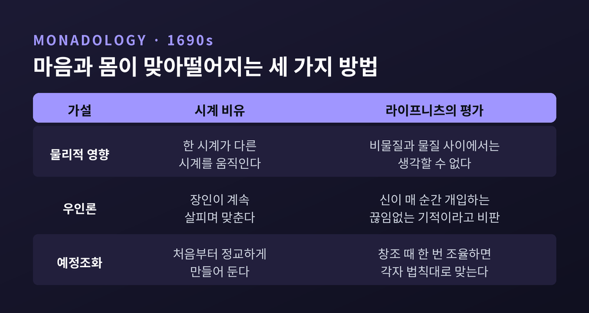
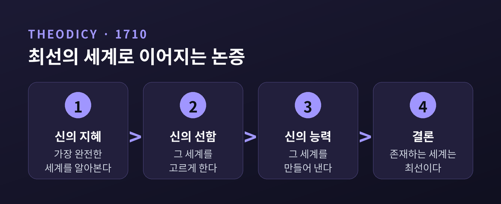
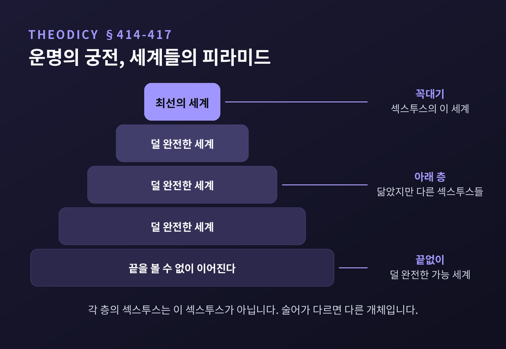
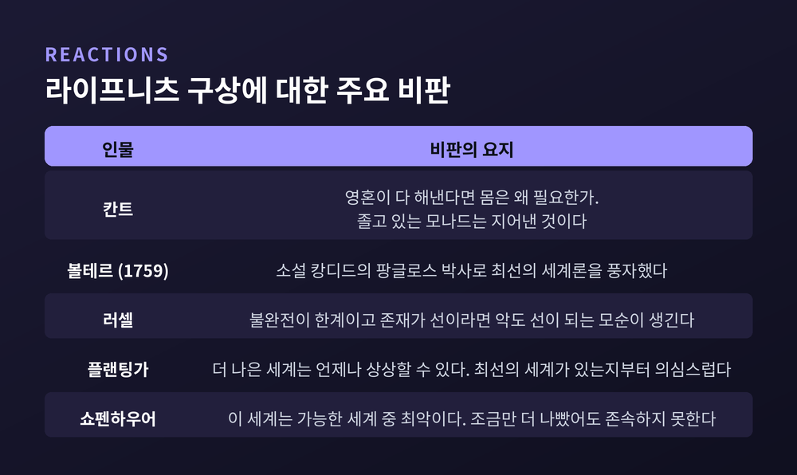

오늘은 라이프니츠의 모나드론과 최선의 세계를 하나의 줄기로 이어 정리해 보려 합니다. 창이 없어 서로 닿지 못하는 단자들이 어떻게 하나의 질서를 이루는지, 그 질서가 왜 '최선'이라 불렸는지를 따라갑니다. 끝에서는 이 구상이 받은 비판도 함께 살펴보겠습니다.
세 줄 요약
『모나드론』은 1712년부터 1714년 9월까지 라이프니츠가 빈에 머무는 동안 프랑스어로 쓴 글입니다. 사보이의 외젠 공을 위해 쓴 것이고, 약 90개 단락으로 이루어져 있습니다. 생전에는 출간되지 않았습니다. 1720년 독일어 번역, 1721년 라틴어 번역이 먼저 나왔고, 「모나드론」이라는 제목은 편집자들이 붙였습니다. 프랑스어 원문은 1840년에야 활자가 되었습니다.
이 짧은 글의 출발점은 물질에 대한 불만입니다. 물질은 공간을 차지하고, 공간을 차지하는 것은 끝없이 쪼갤 수 있습니다. 라이프니츠는 여기서 '참된 하나'가 나올 수 없다고 보았습니다. 1686년 아르노에게 보낸 편지에는 이런 문장이 있습니다. 실체적 통일에는 "완전하고 나뉘지 않으며 자연적으로 소멸하지 않는 존재자"가 필요하다는 것입니다.
그 존재자가 모나드입니다. 『모나드론』 §1은 모나드를 부분 없는 단순 실체로 정의합니다. §3에서는 자연의 "참된 원자"라 부릅니다. 부분이 없으니 크기도 모양도 가질 수 없습니다. 스탠퍼드 철학백과와 인터넷 철학백과는 이를 '정신적 원자'라고 풀이합니다. 우리가 눈으로 보는 물체는 실체가 아닙니다. 단순 실체들에서 비롯한 현상입니다. 라이프니츠는 물체를 없애려는 것이 아니라 "그것이 무엇인지로 환원한다"고 썼습니다.
§17의 방앗간 사고실험도 이 대목과 이어집니다. 생각하는 기계를 방앗간처럼 크게 키워 그 안을 걸어 들어간다고 해 봅시다. 톱니와 지렛대가 서로 미는 모습만 보일 뿐, 지각을 설명해 줄 것은 어디에도 없습니다. 지각은 기계 부품의 배치로 풀리지 않는다는 뜻입니다.
§7의 문장은 이렇습니다. 모나드에는 무엇이 들어오거나 나갈 수 있는 창이 없다는 것입니다. 다른 피조물이 모나드를 안에서부터 바꿀 수는 없습니다. 속성이 실체에서 떨어져 밖으로 돌아다닐 수도 없습니다.
왜 이렇게까지 단단히 닫았을까요. 논리에서 나온 결론이기 때문입니다. 라이프니츠에게 참인 명제란 술어가 어떤 의미에서 주어에 이미 담겨 있는 명제입니다. 그러니 한 실체에는 그에게 참인 모든 술어, 곧 과거와 현재와 미래가 하나의 '완전 개체 개념'으로 들어 있습니다. 알렉산더 대왕의 영혼에는 그에게 일어난 모든 일의 흔적이 있고, 우주에서 일어나는 모든 일의 자취까지 있다고 그는 썼습니다. 다만 그것을 모두 알아볼 수 있는 것은 신뿐이라고 덧붙였습니다.
닫힌 방이라고 해서 비어 있지는 않습니다. 안쪽에서는 세 가지가 쉬지 않고 움직입니다.
의식적으로 알아차리는 '통각'은 모든 영혼에, 또 한 영혼의 모든 순간에 주어지지 않습니다. 감각되지 않는 미세지각은 정신을 연구하는 학문에서 감각되지 않는 미립자가 자연과학에서 중요한 만큼 중요하다고 그는 말했습니다.
모나드들이 서로 다른 이유도 여기에 있습니다. 모든 모나드는 우주 전체를 표현하지만 분명하게 지각하는 것은 가깝거나 큰 것뿐입니다. 나머지는 혼란스럽게 지각합니다. 그 혼란의 정도가 모나드를 서로 구별해 줍니다(§60).
여기서 난처한 문제가 생깁니다. 내가 팔을 들겠다고 마음먹으면 팔이 올라갑니다. 마음과 몸이 상호작용하는 것처럼 보입니다. 그러나 창이 없다면 어떤 실체도 다른 실체에 영향을 줄 수 없습니다.
라이프니츠가 내놓은 답은 예정조화입니다. 스탠퍼드 철학백과는 이를 세 원리로 정리합니다. 첫째, 어떤 피조 실체도 다른 실체에 인과적 영향을 주지 않습니다. 둘째, 각 실체의 상태는 그 실체 자신의 이전 상태에서 나옵니다. 셋째, 모든 실체는 창조 때 완벽히 조율되도록 '프로그램'되어 있습니다. 그 결과 실체들의 상태는 "마치 인과적 상호작용이 있는 것처럼" 맞아떨어집니다.
라이프니츠는 이를 시계로 설명했습니다. 두 시계가 언제나 같은 시각을 가리키는 방법은 세 가지입니다. 한 시계가 다른 시계에 영향을 주거나, 장인이 두 시계를 계속 살피며 맞추거나, 처음부터 너무 정교하게 만들어 저절로 맞게 하는 것입니다. 그는 첫째 방식이 비물질과 물질 사이에서는 "생각할 수 없다"고 보았습니다. 둘째는 신을 '데우스 엑스 마키나'로 만든다고 보았습니다. 남는 것은 셋째입니다. 신이 각 실체를 처음부터 저마다의 법칙을 따르면서도 서로 어긋나지 않게 지었다는 것입니다. 이 비유가 처음 등장한 시점은 자료마다 1695년과 1696년으로 엇갈려서, 여기서는 1690년대 중반이라고만 적어 둡니다.
첫째 방식은 상상 속 이야기가 아닙니다. 1665년 하위헌스는 같은 나무 보에 매단 자신의 진자시계 두 대가 서로 반대 방향으로 흔들리며 박자를 맞추는 것을 관찰했습니다. 원인은 보의 미세한 진동이었고, 그 자신도 그렇게 짚었습니다. 시계에는 보가 있었습니다. 모나드에는 보가 없습니다. 라이프니츠의 요점이 바로 이것입니다.
'우인론'과의 차이도 짚어 둘 만합니다. 말브랑슈는 참된 원인이 신 하나뿐이라고 보았고, 피조물의 인과는 신이 움직이는 계기일 뿐이라고 했습니다. 라이프니츠도 실체 사이의 인과는 부정합니다. 그러나 실체 안에서의 인과는 인정합니다. 피조물이 자기 상태를 스스로 만들어 간다는 것입니다. 우인론이 신의 매 순간 개입에 기댄다면, 예정조화는 창조 때 한 번의 조율에 기댑니다. 그는 앞의 것을 끊임없는 기적이라며 비판했습니다.

이 체계에서 단자들은 어떻게 하나의 세계를 이룰까요. 『모나드론』 §56은 각 모나드를 "우주의 살아 있는 영원한 거울"이라 부릅니다. §57은 도시의 비유를 듭니다. 같은 도시라도 바라보는 방향에 따라 전혀 다른 도시처럼 보입니다. 모나드도 같은 우주를 서로 다른 각도에서 비추는 관점입니다.
여기에 동일성의 원리가 겹칩니다. 두 실체가 완전히 닮고 숫자만 다를 수는 없다는 원리입니다. 관점이 하나도 겹치지 않으니, 우주는 무한히 다양해집니다. 라이프니츠는 §58에서 이 배치가 질서를 해치지 않고 최대한의 다양성을 낳으며, 창조가 이를 수 있는 최대의 완전성을 만든다고 적었습니다.
라이프니츠가 보기에 데카르트는 마음과 몸이 서로 밀고 당긴다고 생각했습니다. 라이프니츠 자신에게 둘은 닿지 않고도 맞아떨어지는 사이입니다. 그 맞아떨어짐의 규모를 우주 전체로 넓힌 것이 다음 주제, 최선의 세계입니다.
『신정론』은 1710년에 나온 책이고, 라이프니츠가 생전에 낸 유일한 책입니다. 출발점은 프로이센 궁정에서 소피 샤를로테 왕비와 나눈 대화들이었습니다. 그중에서도 피에르 벨의 『역사·비평 사전』이 중심에 있었습니다. 벨은 악의 문제가 이성으로 풀리지 않는다고 주장했습니다. 라이프니츠는 여기에 답하려 했고, '신정론'이라는 말이 이 책에서 자리를 잡았습니다.
그는 악을 셋으로 나눕니다. 피조물이 유한하다는 형이상학적 악, 고통이라는 자연적 악, 죄라는 도덕적 악입니다.
논증의 뼈대는 단순합니다. 신은 전지하고 전능하고 전선합니다. 지혜는 가장 완전한 세계를 알아보고, 선함은 그것을 고르게 하고, 능력은 그것을 만듭니다. 그렇다면 존재하는 세계는 가능한 세계 중 최선일 수밖에 없습니다. 라이프니츠는 "더 작은 선은 일종의 악"이라고 썼고, 최선이 없다면 신은 어떤 세계도 만들지 않았을 것이라고 했습니다. 충족이유율이 여기서도 작동합니다. 무한한 가능 세계 중 하나를 고를 이유가 있어야 하기 때문입니다.
부분의 악은 어떻게 되느냐고 물으실 수 있습니다. 라이프니츠의 답은 이렇습니다. 그림자가 색을 돋보이게 하듯, 알맞은 자리의 불협화음이 조화를 편안하게 해 준다는 것입니다. 모든 실체가 서로를 비추고 있으니 한 부분만 떼어 고치면 세계 전체의 완전성이 무너집니다. 1697년의 글에서는 '최선'의 기준이 더 구체적으로 드러납니다. 가장 단순한 법칙으로 가장 풍부한 현상을 낳는 세계라는 것입니다. 인터넷 철학백과는 여기에 피조물의 풍성함을 더해 세 기준으로 정리하고, 이때의 '최선'은 가장 즐거운 세계가 아니라 가장 조화로운 세계라고 설명합니다.

최선이 필연이라면 신에게는 자유가 없는 것 아니냐는 물음이 남습니다. 라이프니츠는 두 필연을 가릅니다. 신은 최선을 택하도록 도덕적으로 묶여 있을 뿐 형이상학적으로 묶여 있지는 않습니다. 다른 세계도 논리적으로는 가능하기 때문입니다. 세계의 존재는 "가정적 필연"이지 "절대적 필연"이 아니라는 구분입니다. 스탠퍼드 철학백과는 이 구분이 1676년 스피노자를 만난 뒤 신의 자유와 피조물의 우연성을 지키려는 방향으로 다듬어졌다고 정리합니다.
또 하나의 열쇠가 '공가능성'입니다. 함께 있을 수 있는 것들끼리 하나의 세계를 이룹니다. 최선의 세계는 가능한 모든 것을 담은 세계가 아닙니다. 서로 어울리는 것들의 가장 좋은 묶음입니다.
『신정론』 §414~417에는 이를 그림처럼 보여 주는 이야기가 있습니다. 로마 마지막 왕의 아들 섹스투스가 유피테르에게 자기 운명을 원망합니다. 대사제 테오도루스가 그를 팔라스 아테나 신전의 '운명의 궁전'으로 데려갑니다. 여신은 말합니다. 여기에는 일어나는 일뿐 아니라 가능한 모든 일의 표상이 있다고요(§414). 세계들은 피라미드 모양으로 쌓여 있습니다. 꼭대기에 최선의 세계가 있고, 아래로는 끝이 보이지 않게 덜 완전한 세계들이 이어집니다(§416).
이야기의 묘미는 다른 층의 섹스투스들입니다. 어떤 세계에는 착한 섹스투스가 있습니다. 그러나 그는 '이 섹스투스가 다르게 행동한 모습'이 아닙니다. 라이프니츠는 "절대적으로 같은 섹스투스가 아니라 그와 닮은 여러 섹스투스"라고 썼습니다. 개체의 모든 술어가 개념 안에 있으니, 다르게 행동하는 순간 다른 개체가 됩니다. 창 없는 모나드의 논리가 여기까지 이어진 셈입니다.

한계도 분명합니다. 먼저 창 없는 모나드가 어떻게 공간을 차지한 물체의 현상을 만들어 내는지는 라이프니츠의 체계에서 끝내 풀리지 않았다는 지적이 있습니다. 칸트는 더 날카롭게 물었습니다. 영혼이 자기 힘만으로 모든 것을 일으킬 수 있다면 왜 굳이 몸을 인정해야 하느냐는 것입니다. 졸고 있는 모나드와 희미한 표상은 "설명된 것이 아니라 지어낸 것"이며 "마법에 걸린 세계"를 떠올리게 한다고도 했습니다. 다만 스탠퍼드 철학백과에 따르면 칸트는 훗날 모나드론을 감각 경험과 떨어져 세계를 바라보는 '플라톤적' 관점의 표현으로 다시 읽었습니다.
예정조화에 대한 표준적 반론도 있습니다. 기적이 사라진 것이 아니라 창조 시점으로 옮겨졌을 뿐이라는 것이 하나입니다. 마음이 몸에 아무 인과적 힘도 없다면 마음은 겉돌게 된다는 것이 또 하나입니다. 이는 2차 자료가 정리한 반론이라는 점을 밝혀 둡니다.
최선의 세계에는 더 널리 알려진 반박이 붙었습니다. 1759년 볼테르는 『캉디드』에서 팡글로스 박사를 통해 이를 풍자했습니다. 재앙이 잇따라도 "가능한 세계 중 최선"을 되뇌는 인물입니다. 여기서 '팡글로스적'이라는 말이 과도한 낙관을 가리키게 되었습니다. 배경에는 1755년 11월 1일의 리스본 대지진이 있습니다. 사망자는 리스본에서 3만~4만 명, 포르투갈·스페인·모로코를 합쳐 4만~5만 명으로 추정되며, 화재와 해일에 따른 사망을 가르기 어려워 자료마다 폭이 있습니다. 라이프니츠는 1716년에 세상을 떠났으니 이 지진을 알지 못합니다. 『캉디드』는 그의 글이 아니라 그의 낙관주의가 후대에 남긴 인상과 싸운 것입니다.
철학자들의 비판도 갈립니다. 러셀은 불완전이 한계일 뿐이고 존재가 선이라면 악 자체가 선이 되어 버린다고 보았습니다. 플랜팅가는 최선의 세계가 있다는 전제부터 의심했습니다. 조금 더 나은 세계는 언제나 상상할 수 있기 때문입니다. 라이프니츠는 이런 반박에 대비해 최선이 없다면 신은 아무 세계도 만들지 않았을 것이라고 못 박았습니다. 다만 이 답이 반론을 완전히 잠재웠다고 말하기는 어렵습니다. 쇼펜하우어는 정반대로 이 세계가 가능한 세계 중 최악이라고 했습니다. 조금만 더 나빴어도 존속하지 못했으리라는 이유였습니다. 한편 저스틴 데일리와 제임스 프랭클린처럼 선과 악이 수학적으로 얽혀 있어 신도 갈라놓지 못한다며 라이프니츠를 옹호하는 현대 논자들도 있습니다.

정리하면 이렇습니다.
라이프니츠의 체계에서 창이 없다는 것은 고립이 아니라 조건입니다. 각 단자가 자기 안의 법칙만으로 세계 전체를 비추기에, 밖에서 밀어 주지 않아도 서로 어긋나지 않는다는 구상이 예정조화입니다. 그 조화의 최대치를 골라낸 것이 최선의 세계입니다.
이 그림이 옳은지는 여전히 열려 있습니다. 볼테르의 웃음도, 칸트의 물음도 아직 완전히 답을 얻지 못했습니다. 그래도 하나는 남습니다.
"닿지 않는 것들도, 서로를 비출 수는 있다."
이 세계가 정말 최선이냐고 물으신다면, 저는 쉽게 그렇다고 답하지 못하겠습니다. 다만 그 물음을 이만큼 끝까지 밀고 간 체계가 드물다는 점만은 기꺼이 인정하겠습니다.